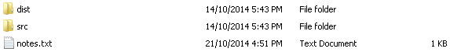

A JavaScript Task Runner
In one word: automation. The less work you have to do when performing repetitive tasks like minification, compilation, unit testing, linting, etc, the easier your job becomes.
Node.js® is a platform built on Chrome's JavaScript runtime for easily building fast, scalable network applications.
Grunt and Grunt plugins are installed and managed via npm, the Node.js package manager.
npm install -g grunt-cliDownload the latest ZIP
The tasks are ready and can be used and run as it is.
Following slides will show you some info & details.
Some notes & articles added @ GitHub.
* I had added some simple comments in notes.txt in some folders.Extract node_modules.zip to working folder for Grunt.
This should be your root folder structure
Gruntfile.js
...
// Default Task is basically a rebuild
grunt.registerTask('default', ['concat', 'uglify', 'stylus', 'imagemin', 'cssmin', 'usebanner']);
...
package.json
...
"name": "Vintedge",
"version": "0.0.1",
"homepage": "http://vintedge.com/",
"author": "Vintedge",
...
"grunt-contrib-cssmin": "~0.10.0",
...
tasks/options
This is where you set the options for the various plugins. For usage and details, please refer to the plugins page.
assets
This should be your assets folder structure.
assets/css/src/structure
CSS coded with Stylus.
Why Stylus? And Not SASS or LESS
This should be your css folder structure.
assets/css/src/structure
You can change this to your preferred structure and remember to check tasks/options/stylus.js.
files: {
'assets/css/dist/style.css': [ // dist
'assets/css/src/style.styl', // src
'assets/css/src/structure/*/*.styl' // src
]
}
assets/img
Images are optimized from src folder to dist folder.
You can change this to your preferred structure and remember to check tasks/options/imagemin.js.
files: [{
expand: true,
cwd: 'assets/img/src',
src: ['**/*.{png,jpg,gif,svg}'], // src
dest: 'assets/img/dist' // dist
}]
assets/js
JS are combined from src folder to dist folder.

You can change this to your preferred structure and remember to check tasks/options/concat.js.
dist: {
src: ['assets/js/src/plugins/*.js' , 'assets/js/src/script.js'], // src
dest: 'assets/js/dist/script.js' // dist
}
assets/js/dist
JS are optimized from script.js to script.min.js.
You can change this to your preferred structure and remember to check tasks/options/uglify.js.
build: {
src: 'assets/js/dist/script.js', // src
dest: 'assets/js/dist/script.min.js', // dist
}
This command will run all Grunt tasks.
grunt
This command will run Grunt task - watch.
grunt watch
Hope to have more contributions to this template.
Once again some notes & articles added @ GitHub.
/